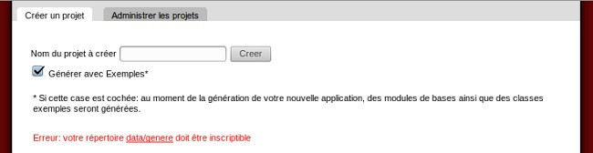
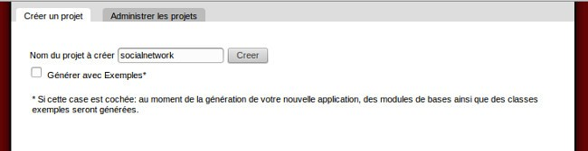
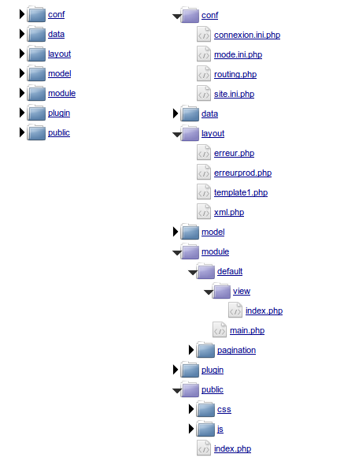
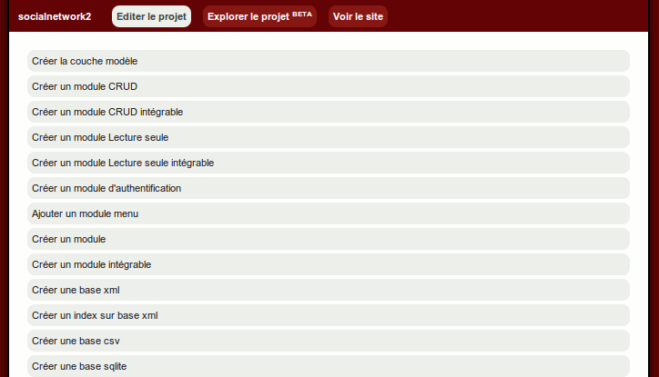

Création d'un réseau social avec le mkframework
-I Préambule
-II Création et initialisation du projet
-III L'authentification
-IV Créons notre menu
-V Partie privée : le profil
-VI Partie privée : votre réseaux de contacts
(en attente de rédaction)-VII Partie privée : votre fil
(en attente de rédaction)-VIII Partie privée : administrez vos photos
(en attente de rédaction)-IX Profil partagé
(en attente de rédaction)-X Design/ esthétique
(en attente de rédaction)-XI Conclusion
II Création et initialisation du projet
II.A Notre builder va nous faire gagner du temps
Comme présenté dans le précédent article, le builder va ici nous faire gagner du temps.
Après avoir téléchargé le mkframework dans le répertoire d'apache (plus d'infos dans l'article
d'introduction)
On ouvre son navigateur à l'adresse du framework pour utiliser le builder
http://localhost/mkframework/

On entre le nom du projet « socialnetwork » et on créé le projet
Et on décoche « Générer avec Exemples »
Pour rappel, le builder va créer le projet dans le répertoire data/genere du framework
Et vous aurez cette arborescence:

On va modifier le fichier contenant les paramètres de connexion conf/connexion.ini.php
CODE
;<?php die()?>
[db]
socialnetwork.dsn="mysql:dbname=socialnetworkDb;host=localhost"
socialnetwork.sgbd=pdo_mysql
socialnetwork.hostname=localhost
socialnetwork.database=socialnetworkDb
socialnetwork.username=socialnetworkUser
socialnetwork.password=s0c1alN3tw0Rk
II.B On créé la couche modèle
On édite le projet
On clique sur "créer couche model"

On sélectionne toutes les tables
On génère les fichiers des classes modèles.
Lire la suite : III L'authentification